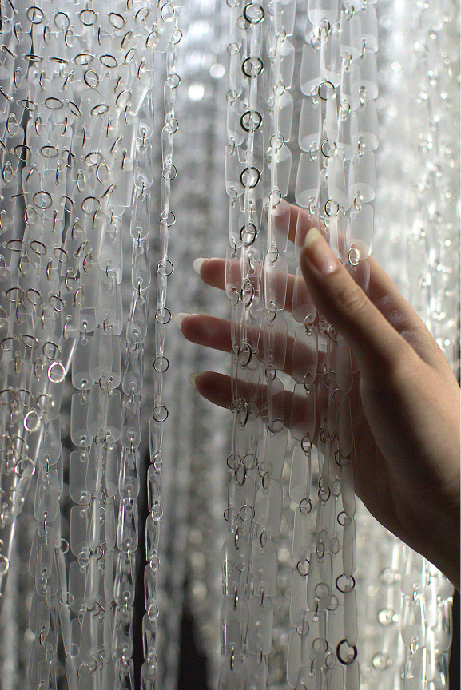

02 / SOBRE MÍ

ABOUT
ME.
KATALINA RÍOS
Estudiante de Diseño con mención en Sistema Moda. Investigo, experimento y creo desde la relación entre cuerpo, materia, memoria e interacción.
MI PRÁCTICA / MATERIA, CUERPO Y TRANSFORMACIÓN
ENFOQUE
DISEÑAR ES
INVESTIGAR.
Entiendo el diseño como un proceso abierto de observación, prueba y transformación. Mi práctica cruza el vestuario, la experimentación textil, los biomateriales y la creación de experiencias digitales.
Trabajo desde la materialidad y el análisis del contexto para construir experiencias que articulan lo textil, lo sensorial y lo digital.
METODOLOGÍA
DEL MATERIAL
A LA EXPERIENCIA.
Parto investigando un contexto o material. Registro pruebas, errores y decisiones; después traduzco esos hallazgos en siluetas, objetos o sistemas interactivos. La forma final nace del proceso.
HERRAMIENTAS
Moldería y confección · investigación material · HTML, CSS y JavaScript · GitHub Pages · prototipado web.
FORMACIÓN
Diseño
Mención Sistema Moda
TRAYECTORIA / CONTACTO
EN PROCESO.
CON DIRECCIÓN.
Durante el semestre desarrollé experiencias que conectan imagen, sonido y tacto; paralelamente construí proyectos de vestuario, biomateriales y reutilización. Este portafolio organiza ese recorrido y muestra tanto los resultados como las preguntas que los originaron.